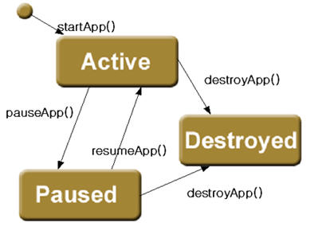

|
|||||||||
| PREV CLASS NEXT CLASS | FRAMES NO FRAMES | ||||||||
| SUMMARY: INNER | FIELD | CONSTR | METHOD | DETAIL: FIELD | CONSTR | METHOD | ||||||||
java.lang.Object | +--org.kwis.msp.lcdui.Jlet
WIPI 응용 프로그램입니다.
WIPI를 이용하는 모든 응용 프로그램은 Jlet을 상속받아서
작성되어야 합니다.
WIPI에서의 자원들은 모두 Jlet단위로 응용 프로그램의
자원이 관리됩니다.
WIPI에서 생성한 Thread와 Card들은 Jlet이 종료될 때
시스템에서 사라 집니다.
Jlet은 세 가지 상태를 가집니다. Jlet을 생성 시키면 자동적으로 active상태가 되고, JAM에서 프로그램을 일시 정지하거나 프로그램이 사용자에 의해서 일시 정지시켜야 하는 경우에는 pause상태가 됩니다. 이 상태에서 JAM이나 사용자에 의해서 다시 active상태로 돌아 올 수 있습니다.
어떠한 상태던지 Jlet은 destroyed상태로 전이할 수 있으며, 이 때에는 Jlet은 프로그램을 종료해야 합니다.
프로그램은 전이하는 상태에서 다음 그림과 같이 각각 pauseApp()와
resumeApp(), startApp(), destroyApp()
함수가 불립니다.

프로그램을 처음에 startApp함수가 불립니다. 이때에는
파라미터로 System.execute함수 호출시 넘긴 파라미터가
넘어 옵니다.
| Field Summary | |
static int |
ACTIVE
|
static int |
DESTROYED
|
static int |
PAUSED
|
| Constructor Summary | |
protected |
Jlet()
새로운 Jlet을 생성합니다. |
| Method Summary | |
protected abstract void |
destroyApp(boolean unconditional)
프로그램이 종료 됨을 알려주는 함수입니다. |
static Jlet |
getActiveJlet()
현재 활성화된 Jlet를 얻어 옵니다.
|
String |
getAppProperty(String key)
응용 프로그램마다 지정되어 있는 프라퍼티를 돌려줍니다. |
static Jlet |
getCurrentJlet()
현재 수행중인 Jlet을 얻어 옵니다. |
int |
getCurrentProgramID()
Jlet을 생성한 프로그램 id를 돌려준다. |
EventQueue |
getEventQueue()
Jlet과 연결된 이벤트 큐를 돌려줍니다. |
static Jlet |
getJletFromPID(int id)
주어진id에 해당하는 Jlet를 얻어 옵니다.
|
void |
notifyDestroyed()
프로그램을 종료 시킬때 사용되는 함수. |
protected void |
pauseApp()
프로그램을 정지하려고 하는 때 불려집니다. |
static void |
removeAllResource(int id)
|
protected void |
resumeApp()
정지된 프로그램을 다시 수행을 재기하려할때 불려집니다. |
static void |
setActiveJlet(Jlet ql)
지정된 Jlet을 활성화 시킵니다.
|
protected abstract void |
startApp(String[] args)
프로그램이 시작될 때 불려집니다. |
| Methods inherited from class java.lang.Object |
equals, getClass, hashCode, notify, notifyAll, toString, wait, wait, wait |
| Field Detail |
public static final int ACTIVE
public static final int DESTROYED
public static final int PAUSED
| Constructor Detail |
protected Jlet()
| Method Detail |
public static void setActiveJlet(Jlet ql)
Jlet을 활성화 시킵니다.
지정된 Jlet을 활성화 시킵니다.public static Jlet getActiveJlet()
Jlet를 얻어 옵니다.
활성화된 Jlet이 없는 경우에는 null을 돌려줍니다.Jletpublic static Jlet getJletFromPID(int id)
Jlet를 얻어 옵니다.
주어진 Jlet이 없거나 잘못된 ID인경우 경우에는 null을 돌려줍니다.Jletpublic static Jlet getCurrentJlet()
Jlet을 얻어 옵니다.Jletpublic int getCurrentProgramID()
id - Jlet을 생성한 프로그램 idprotected abstract void startApp(String[] args)
이 함수는 수행중에 단 한번만 불립니다.
Jlet에게 넘겨지는 인수가 args로 넘어 옵니다.
이때 args[0]은 Jlet 이름이 되고,
args[1]부터 사용자가 넘겨주는
인수가 됩니다.
args - 사용자가 넘기는 인수.protected void pauseApp()
protected void resumeApp()
pauseApp함수로 정지했던 Jlet를 다시
기동시키며, 이 함수내에서 pauseApp에서 돌려주었던
시스템 자원들(네트웍, 시리얼등)을
다시 할당 받도록 함수를 구현하셔야 합니다.
protected abstract void destroyApp(boolean unconditional)
throws JletStateChangeException
unconditaional이 true를 주면,
프로그램은 무조건 종료해야 합니다.
false를 주면 프로그램은 상황에 따라서
JletStateChangeException
예외를 던지므로써 프로그램이 종료되는 것을 막을 수가 있습니다.
이 함수에는 프로그램이 할당한 모든 자원을 시스템에게 돌려주고, 주요한 자료를 저장해야합니다. 만일 이 함수내에서 무한 루프를 돌면 종료되지 않은 상태가 될 수 있으므로 유의하십시오.
unconditonal - 만일 true이면 프로그램이 무조건 종료가 되고,
false일때에는 Jlet은
JletStateChangeException을 던져서 프로그램 종료를 막을
수 있음JletStateChangeException - 현재 상태에서 프로그램을 종료할 수
없는 경우. 만일 unconditional이 true이면, 이 예외를 던진다 해도,
프로그램은 종료됩니다.public final void notifyDestroyed()
Jlet응용 프로그램을 종료할 때 이 함수를 부릅니다.
이 함수를 부르면 프로그램은 Destoryed상태로 들어가며,
차후에 destroyApp메써드를 호출합니다.
Jlet.destroyApp()를 호출함으로써 프로그램이 가지고 있는
모든 자원을 되돌려 줍니다.
public final String getAppProperty(String key)
key에 대응하는 프라퍼티 문자열을 돌려줍니다. 만일
대응 하는 프라퍼티가 없다면 null를 돌려줍니다.key - 찾을 프라퍼티에 대응하는 키public final EventQueue getEventQueue()
Jlet과 연결된 이벤트 큐를 돌려줍니다.public static void removeAllResource(int id)
|
|||||||||
| PREV CLASS NEXT CLASS | FRAMES NO FRAMES | ||||||||
| SUMMARY: INNER | FIELD | CONSTR | METHOD | DETAIL: FIELD | CONSTR | METHOD | ||||||||
AromaSoft Corp. Proprietary and Confidential
(C)opyright 2003 AromaSoft Corp. All right reserved.
Contact : contact@aromasoft.com